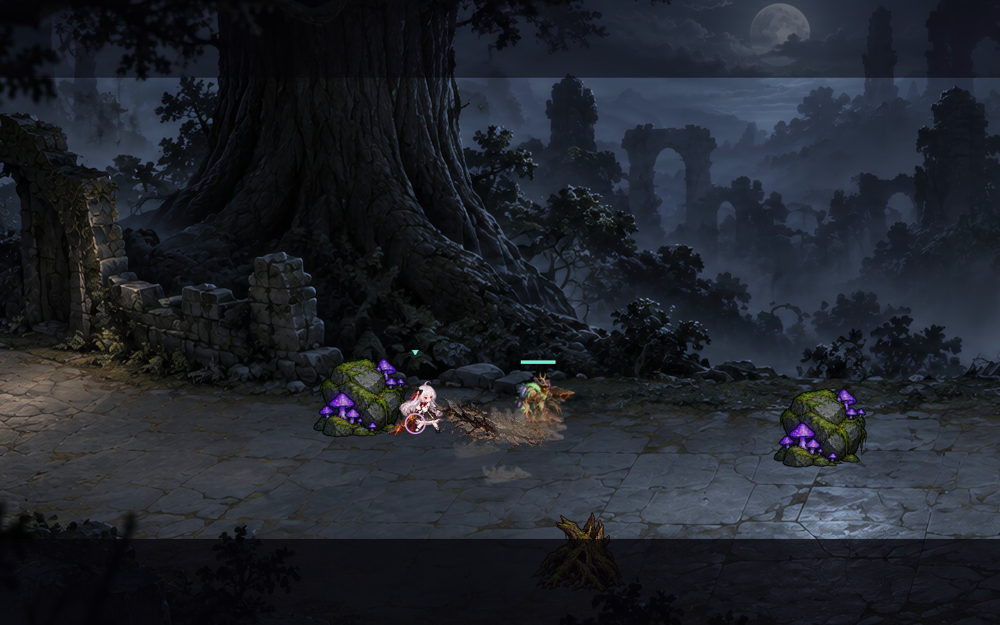

武器特效 · 节奏与尺寸修订
47 把武器逐把编排，采用一次至五次释放的不同节奏；星霜佩剑沿用原有独立动作。法杖重击长度与爆炸半径缩小约 35%，战技长度控制在 320–430、爆炸半径控制在 45–82。所有战技仍只扣一次法力、触发一次冷却。
下列录像均来自本轮实机录制；其余卡片展示已接入的动作节奏。录像可用下方按钮统一慢放。
地裂实机残留

裂缝沿出招路径展开，包含暗色土石断面、碎石和局部亮边，随烟尘逐渐消退。
绯红单手剑 600
绯红·回旋返刃
贴身回旋展开，再折返切过前方。
0.32s
释放 10.27s
释放 2
战技 · 2 次实机命中
鸦喙刺剑 601
鸦喙·一线穿心
短暂压低重心，沿直线高速穿刺。
0.48s
释放 1
战技 · 1 次实机命中
回环弯刀 602
绢刃·往返
向外甩出绢刃，再反向回卷。
0.35s
释放 10.38s
释放 2
血棘双刃 603
荆棘·交绞
两次快速交叉切割，收束成一次重斩。
0.16s
释放 10.15s
释放 20.38s
释放 3
银月细剑 604
残月·跃返
跃进斩出月弧，后撤时再留一道残月。
0.42s
释放 10.25s
释放 2
烛影短刀 605
烛影·掠灭
低身冲过目标，留下骤然熄灭的烛刃。
0.36s
释放 1
鸣电军刀 607
鸣电·疾影贯穿
压缩雷光后一次突进贯穿。
0.42s
释放 1
断誓直剑 608
断誓·破封裁决
窄幅破封刺击后，停顿展开封蜡裁决。
0.22s
释放 10.49s
释放 2
镜花曲剑 609
镜刃·错身双映
左右错身，各留一道相反的镜刃。
0.28s
释放 10.28s
释放 2
葬铃仪剑 610
钟鸣·四叠震
一次定身起振，三次短促余震沿前方传开。
0.42s
释放 10.13s
释放 20.13s
释放 30.16s
释放 4
战技 · 4 次实机命中
黑曜戒律剑 611
黑曜·断面
蓄势后以完整黑曜断面一击劈落。
0.64s
释放 1
破晓双手剑 612
破晓·跃光断岳
直接跃起劈落，再由地面反震推出一道金刃。
0.52s
释放 10.27s
释放 2
断潮巨刃 613
潮涌·推浪
前冲推起一道厚重潮峰。
0.62s
释放 1
裂地重剑 614
裂地·崩山
原地蓄力砸地，向前掀起一道土脊。
0.72s
释放 1
战技 · 1.0 次实机命中
熔炉巨锤 615
熔炉·锤震
重锤落地后接一次短促的炉渣反冲。
0.58s
释放 10.18s
释放 2
霜骨战斧 616
霜骨·冰脊
跃落一击，沿前方顶出冰脊。
0.65s
释放 1
雷骸重剑 617
雷骸·凌空天罚
上挑腾空，停顿后落下天罚重刃。
0.32s
释放 10.56s
释放 2
血狱斩首刃 618
断罪·铡落
长蓄势后跃进，铡刃一次落下。
0.78s
释放 1
星陨石槌 619
星陨·震荡
重击星石，随后三次衰减石浪向外展开。
0.48s
释放 10.17s
释放 20.17s
释放 30.21s
释放 4
战技 · 4 次实机命中
余烬壁刃 620
城垣·破壁
向前猛推断壁，缓慢而沉重的一击。
0.68s
释放 1
风暴战戟 621
青岚·横扫返挑
长柄横扫后反手上挑。
0.34s
释放 10.34s
释放 2
冥潮仪镰 622
幽镰·环收
环形勾取后后撤收镰。
0.37s
释放 10.42s
释放 2
无名王剑 623
王刃·裁断
沉稳迈步后以王刃完整劈落。
0.70s
释放 1
守夜步枪 624
寒鸦·点射
短促四连点射，最后一发稍作瞄准。
0.22s
释放 10.12s
释放 20.12s
释放 30.30s
释放 4
暮羽长弓 625
暮羽·追魂
拉满弓弦，一箭贯穿。
0.64s
释放 1
血棘连弩 626
血棘·双簇
两簇交错的荆棘箭，侧移后补射。
0.28s
释放 10.32s
释放 2
烬鸦火铳 627
焰鸦·爆响
近距单次扇形齐射，后坐力推人后退。
0.38s
释放 1
霜月猎弓 628
霜翎·封线
蓄力一次放出五道冰箭封锁前方。
0.62s
释放 1
雷翼卡宾枪 629
鸣电·急雨
五次快速电脉冲，节奏紧凑。
0.22s
释放 10.10s
释放 20.10s
释放 30.10s
释放 40.16s
释放 5
战技 · 5 次实机命中
黑曜长枪 630
黑曜·破甲
长瞄准后射出一发破甲弹。
0.72s
释放 1
镜轨双铳 631
镜铳·交映
左右错身交替双枪齐射。
0.25s
释放 10.25s
释放 2
逐风短弓 632
风翎·掠射
侧滑时一次放出宽幅羽箭。
0.40s
释放 1
断誓穿甲枪 633
封印·破甲
定点压缩火药，单发贯穿封印。
0.66s
释放 1
葬铃灵弩 634
鸣钟·回响箭
一发引弦，停顿后两箭回响。
0.30s
释放 10.40s
释放 2
晨曦信号枪 635
信标·照路
一次发射三枚扇形信号弹。
0.48s
释放 1
星辉法杖 636
星辉·贯流
短暂聚星后，一束细长星辉贯穿前方。
0.56s
释放 1
战技 · 1.0 次实机命中重击 · 1.0 次实机命中
赤陨法杖 637
陨火·坠落
在瞄准位置落下一颗陨石，单次爆裂。
0.76s
释放 1
战技 · 1.0 次实机命中重击 · 1.0 次实机命中
霜针短杖 638
霜针·骤雨
两阵快慢相间的冰针齐射。
0.30s
释放 10.42s
释放 2
战技 · 4 次实机命中重击 · 3.0 次实机命中
鸣雷之杖 639
雷枝·连闪
同一区域四次短促递减落雷。
0.36s
释放 10.12s
释放 20.14s
释放 30.18s
释放 4
战技 · 4.0 次实机命中重击 · 1.0 次实机命中
月弧法杖 640
月华·双弦
两道交错月刃，第二道略作停顿。
0.33s
释放 10.40s
释放 2
战技 · 2.0 次实机命中重击 · 1.0 次实机命中
曦光棱镜杖 641
棱镜·聚焦
较长聚焦后一次射出窄幅金色光束。
0.72s
释放 1
战技 · 1.0 次实机命中重击 · 1.0 次实机命中
烬羽散华杖 642
焰羽·展翼
后撤时一次展开七枚火羽。
0.50s
释放 1
战技 · 3 次实机命中重击 · 3.0 次实机命中
虚涡法杖 643
虚空·塌缩
小范围起涡，停顿后向内塌缩。
0.34s
释放 10.53s
释放 2
战技 · 2 次实机命中重击 · 1.0 次实机命中
蚀月长枪杖 644
蚀月·破界
压缩黑色枪芒，一次窄幅穿透。
0.78s
释放 1
战技 · 1.0 次实机命中重击 · 1.0 次实机命中
血契仪杖 645
血契·开庭
定点展开血契，一次裁决爆发。
0.64s
释放 1
战技 · 1.0 次实机命中重击 · 1.0 次实机命中
冥庭唤魂杖 646
冥庭·引魂
先聚拢魂片，再于原处收束爆裂。
0.40s
释放 10.46s
释放 2
战技 · 2 次实机命中重击 · 1.0 次实机命中
晨钟祈愿杖 647
祈愿·钟鸣
四次渐强钟鸣，范围缓缓展开。
0.36s
释放 10.18s
释放 20.20s
释放 30.28s
释放 4
战技 · 4.0 次实机命中重击 · 1.0 次实机命中